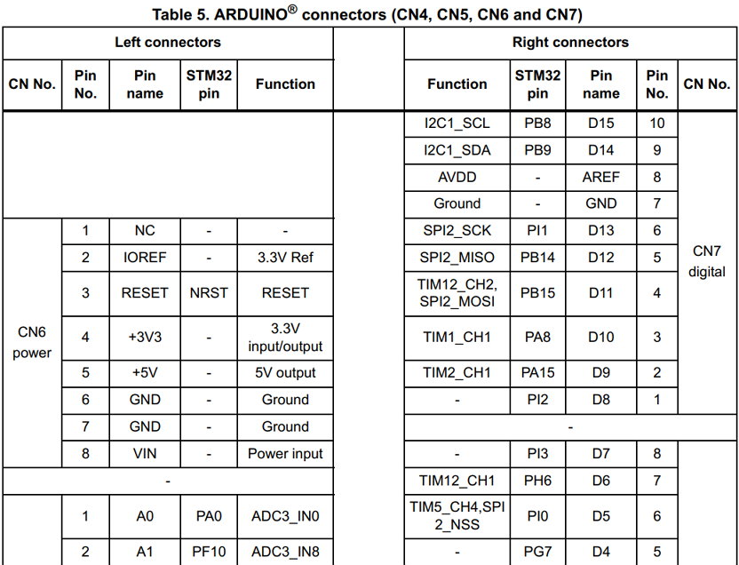

STM32F746 discovery
The 128-Mbit SDRAM is connected to the FMC interface of the STM32F746NGH6 microcontroller. Only the lowest 16-bit data are used (64-Mbit accessible). DQ16 to DQ31 are unused and connected to a 10K ohm pull-down resistor.

There are specific directories calling out the STM32F746G-DISCO as a target for the examples.
STM32Cube_FW_F7_V1.3.0\Projects\STM32746G-Discovery\Examples\DMA2D\DMA2D_MemToMemWithBlending
STM32Cube_FW_F7_V1.3.0\Projects\STM32746G-Discovery\Demonstration\Core\Src\main.c
Blog Post
I recommend you to download the last version of
http://www.st.com/content/st_com/en/products/embedded-software/mcus-embedded-software/stm32-embedded-software/stm32cube-embedded-software/stm32cubef7.html
and you find the LTDC example you are seeking for at this path: stm32cubef7\STM32Cube_FW_F7_V1.4.0\Projects\STM32746G-Discovery\Examples\LTDC -Hannibal-
LVGL ported to STM32F746 Discovery
https://github.com/lvgl/lv_port_stm32f746_disco
LVGL port to STM32H747I_Disco evaluation board.
https://github.com/MaxSpb69/STM32H747I_Disco_LVGLport
Source: stm32h747i-discovery-stm32h747-dual-core-mcu-lvgl-port
Others: Other Blog Posts
https://github.com/lvgl/lv_port_stm32f746_disco
https://github.com/MaxSpb69/STM32H747I_Disco_LVGLport